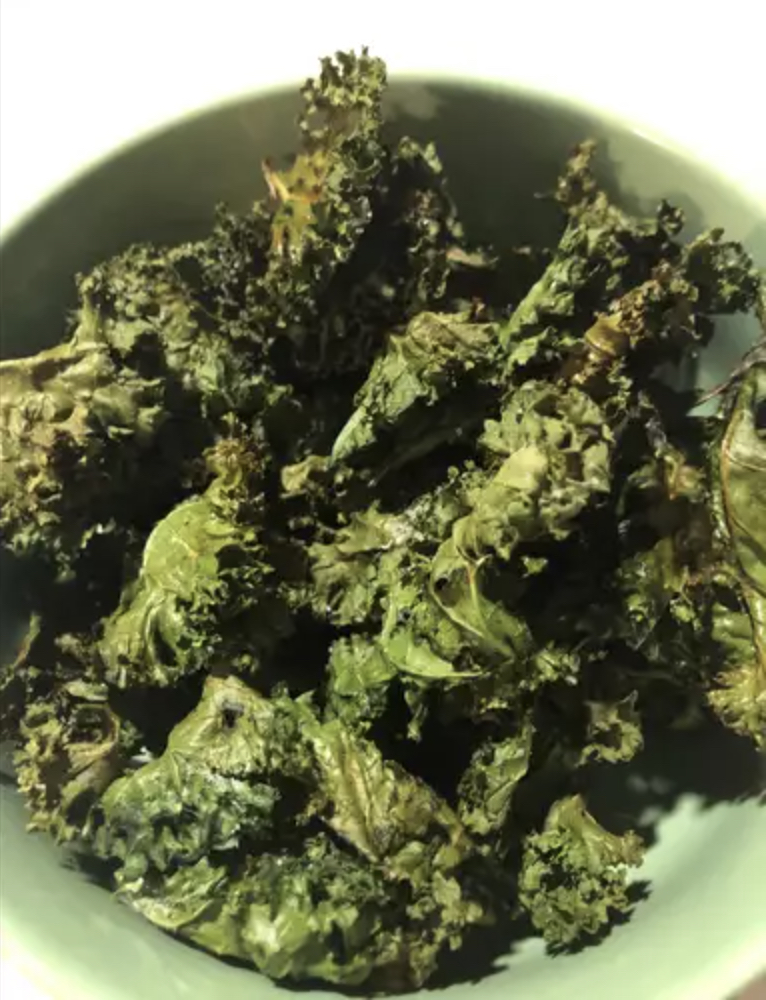

Baked Kale Chips

Easy and yummy kale chips baked at home!
Ingredients
- bunch kale
- 1 tablespoon olive oil
- 1 teaspoon flaked sea salt
Directions
Gather Your Ingredients: Collect all the necessary ingredients.
- Preheat the Oven: Preheat your oven and prepare a rimmed baking sheet by lining it with parchment paper.
- Prepare the Kale: Carefully separate the kale leaves from the thick stems and tear them into bite-sized pieces.
- Wash and Dry the Kale: Thoroughly wash the kale and use a salad spinner to ensure it's completely dry.
- Coat with Olive Oil: Drizzle the kale leaves with olive oil and toss them to make sure they're well coated.
- Spread Out on Baking Sheet: Arrange the kale pieces in a single layer on the prepared baking sheet, ensuring they're not overlapping. Sprinkle some salt evenly over the kale.
- Bake to Perfection: Bake the kale until the edges start to turn brown, but be careful not to let them burn.
- Enjoy! Once they're done, take them out of the oven and savor your homemade baked kale chips.